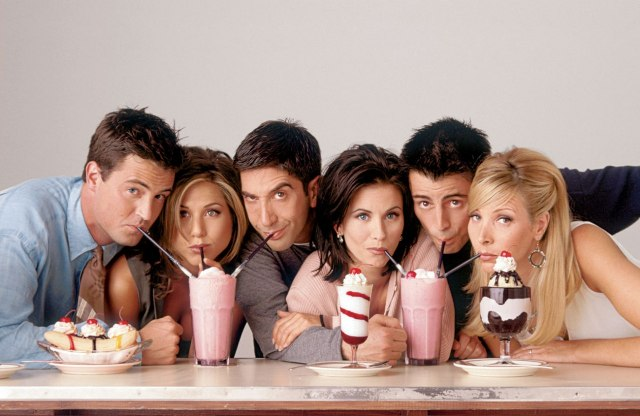
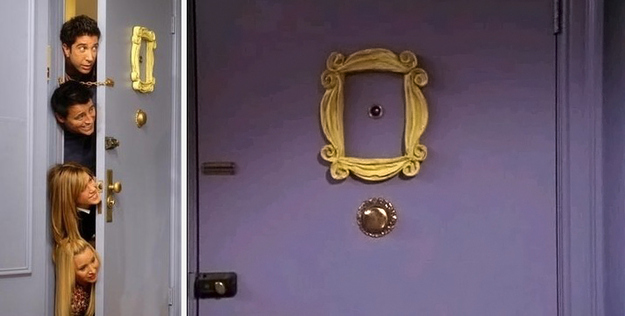

Friends
Rachel Karen Green (Jennifer Aniston): Su nombre completo es Rachel Karen Green. Es amiga de Mónica desde la infancia, aunque al principio de la serie llevaban tiempo sin verse. Es hija del Dr. Leonard Green y Sandra Green (actualmente divorciados), pasó toda su niñez y adolescencia siendo consentida, por ser hija de padres ricos. Tiene dos hermanas, Jill (Reese Witherspoon) y Amy (Christina Applegate), tan mimadas como ella. Al empezar la primera temporada, decide abandonar a su prometido Barry Farber en el altar ya que a último momento se da cuenta de que realmente no lo ama. Abandona su buena vida para poder dedicarse a trabajar y ganar su propio sueldo. Aún así, a veces le sale la niña consentida que lleva en su interior. Comenzó trabajando de camarera en Central Perk, pero poco a poco logró introducirse en el mundo de la moda, su verdadera pasión. Es extremadamente patosa y torpe, y es incapaz de concentrarse en algo que no le interesa; además tiene el defecto de cambiar todo regalo que se le da. Ha tenido diferentes novios (cameos) en la serie, entre los que destaca Bruce Willis.1 Sin embargo, su verdadero amor siempre fue Ross, con el que se casó y luego divorció para luego tener una hija, Emma, y permanecer juntos.
Monica E. Geller (Courteney Cox): Su nombre completo es Monica Elizabeth Geller. Es la hermana de Ross y vive en el apartamento donde vivía su abuela. De pequeña era obesa pero adelgazó en su adolescencia cuando Chandler la llamó gorda. Es chef profesional,2 y trabaja en diversos restaurantes a lo largo de la serie. Monica se caracteriza por su obsesión por el orden y la limpieza.3 4 También es sumamente competitiva y eficiente en cualquier cosa que hace. La mayoría de las fiestas o cenas especiales se realizan en su apartamento, ya que le gusta mucho ser la anfitriona. En la séptima temporada se casa con Chandler Bing, con el cual acaba adoptando mellizos, una niña llamada Erica en honor a la madre de los mellizos y un niño llamado Jack en honor al padre de Monica y Ross.
Phoebe Buffay (Lisa Kudrow): Es la más distraída del grupo. También es la que tuvo la infancia más dura. Su madre (Lilly) se suicidó cuando ella y su hermana gemela, Ursula, con quien no habla regularmente, eran adolescentes. Además, su padre biológico las abandonó y su padrastro fue a prisión, por lo que acabó viviendo en la calle. Posteriormente descubre que su madre biológica en realidad sigue viva y va a conocerla. Es un poco chiflada y rara y no duda en demostrarlo. Considera normales cosas que los demás ven de locos. A pesar de haber tenido que vivir en la calle robando, es muy inocente y muy cariñosa con sus amigos; siempre está ahí cuando ellos la necesitan. Es vegetariana y ama a todo ser viviente e, incluso, a seres no vivientes. Ejerció de madre de alquiler porque su medio hermano, Frank Buffay Jr., no podía tener hijos con su mujer, Alice Knight, mucho mayor que él, a principios de la 5 temporada, Phoebe dio a luz a los trillizos: Frank Jr. Jr., Leslie y Chandler. Phoebe se gana la vida como masajista, pero también disfruta de componer canciones y tocarlas acompañada de su guitarra en Central Perk.5 En la décima temporada se casa con Mike Hannigan (Paul Rudd).
Joey Tribbiani (Matt LeBlanc): Su nombre completo es Joseph Francis Tribbiani. Proviene de una familia ítaloamericana, es el mayor de ocho hermanos siendo él el único hombre. Es el menos inteligente del grupo y siempre tarda en entender lo que le dicen. Se gana la vida como actor, protagonizando anuncios, obras de teatro y sobre todo telenovelas, pasando por su mayor éxito, la serie Days of our Lives. Es aficionado de los Knicks. Es un mujeriego, teniendo multitud de romances. Al igual que Monica, adora la comida, aunque él no es tan refinado, su comida favorita son los Sándwiches y odia compartir su comida. Se enamora de Rachel, sin embargo su relación no dura más que una semana debido a que descubrieron con Rachel que realmente era mayor el sentimiento de amigos que el sentimiento de atracción, no así como había pasado entre Chandler y Mónica
Chandler Muriel Bing (Matthew Perry): Su nombre completo es Chandler Muriel Bing. Fue el compañero de habitación de Ross durante la universidad y es el actual marido de Mónica. Es el sarcástico del grupo, forma de ser debida a su extravagante infancia, con un padre homosexual (Kathleen Turner), que después de divorciarse de su mujer (Morgan Fairchild) sería el protagonista de un show para travestis en Las Vegas llamado "Viva las Gaygas". Desde entonces, usa el sarcasmo y la ironía para reírse de todos y de todo, como un mecanismo de defensa.7 Odia el Día de Acción de Gracias, ya que fue en este día cuando sus padres le dijeron que se iban a divorciar; también odia su trabajo que consiste en "análisis estadístico y reconfiguración de datos", trabajo al que termina renunciando para desempeñarse en lo que verdaderamente le gusta: la publicidad. En la séptima temporada se casa con Monica Geller, con la cual acaba adoptando gemelos.
Ross Geller (David Schwimmer): Su nombre completo es Ross Eustace Geller. Es el hermano mayor de Monica. Es doctor en paleontología. Empezó trabajando en un museo y terminó de profesor en la Universidad de Nueva York, NYU. Es el más culto e inteligente, llegando a aburrir al resto con sus largas lecciones. Se divorció de Carol, estando embarazada de su futuro hijo Ben, cuando descubrió que ella era lesbiana. Desde entonces, le cuesta mucho establecer una relación. Se volvió a casar con una inglesa llamada Emily, pero se divorciaron rápidamente ya que cuando estaba en el altar se equivocó de nombre, mencionando el de Rachel. Se casó una tercera vez con Rachel durante una borrachera en Las Vegas y de nuevo se divorció. Más tarde tuvieron una hija, Emma. Cuando Rachel decidió mudarse a Francia, se dio cuenta de que la amaba de verdad, así que fue a buscarla al aeropuerto. Cuando regresa sin Rachel, escucha un mensaje de ella que decía que lo amaba. En el mismo capítulo Rachel vuelve y se reconcilian.